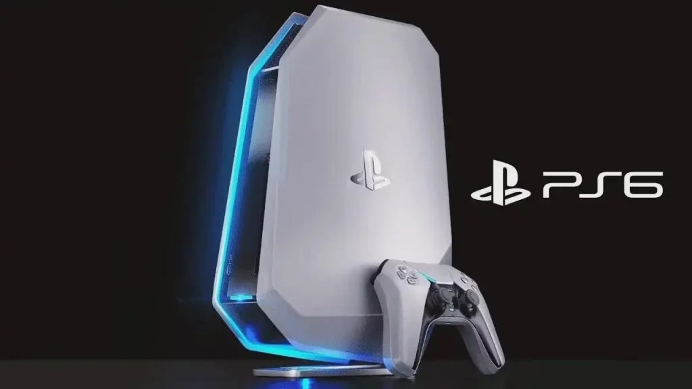

Introducing You Brand New PlayStation 6 From Sony Games -
-
How It is Different From other available consoles?
1 - Its is made up of 3 intel core i9 200w tgp raw performance.
-
Can do 12k Smooth Gaming on 500fps.
-
Designed in Ghaziabad by hardworking designers and professors with phd.
-
Some Images of the consoles.

-
Some Crazy Improvements done compared to last gen console:
The PS6 isn’t just a step beyond the PS5—it feels like a relic forged by the gods of gaming themselves. Where the PS5 was a mighty sword, the PS6 is a legendary Excalibur, glowing with untold power. Games no longer simply load; they awaken instantly, as if summoned by magic. Its worlds are so vivid they blur the line between myth and reality, and its controller feels enchanted, responding to thoughts almost before the fingers move. If the PS5 was the hero’s journey, the PS6 is the epic tale retold in golden ink—larger, brighter, and destined to live forever in the halls of gaming legend.
The PS6 rises like a divine artifact of elegance, its design so sleek it seems carved from starlight itself. Unlike the bulky frame of the PS5, this mythical machine is slim, sharp, and effortless, radiating an aura of futuristic grace. Every curve flows like liquid silver, every edge gleams with precision, making it less of a console and more of a celestial sculpture. Just placing it in a room feels like summoning a fragment of tomorrow, a design so refined it makes the PS5 look like a relic of the past.
Price Of our new console:
| Model |
Price |
| 1 TB |
3000$1500 $ |
| 2 TB |
5000$2000 $ |
-
THANK YOU FOR CHOOSING US !
- Have a nice Day !
Credit Of content
timesofindia